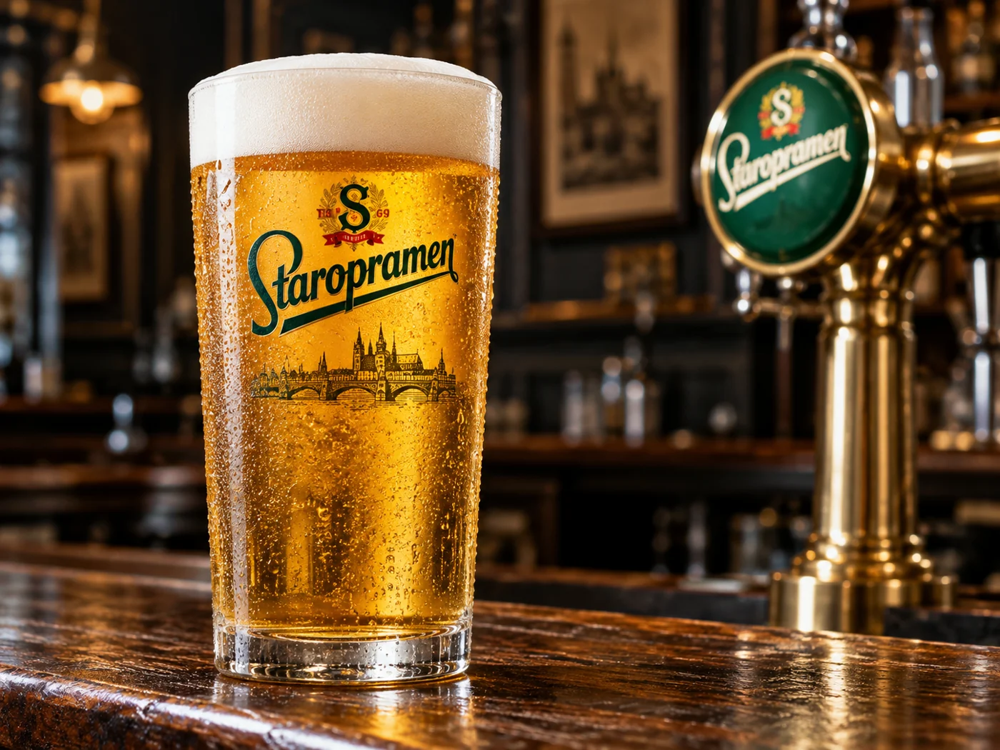
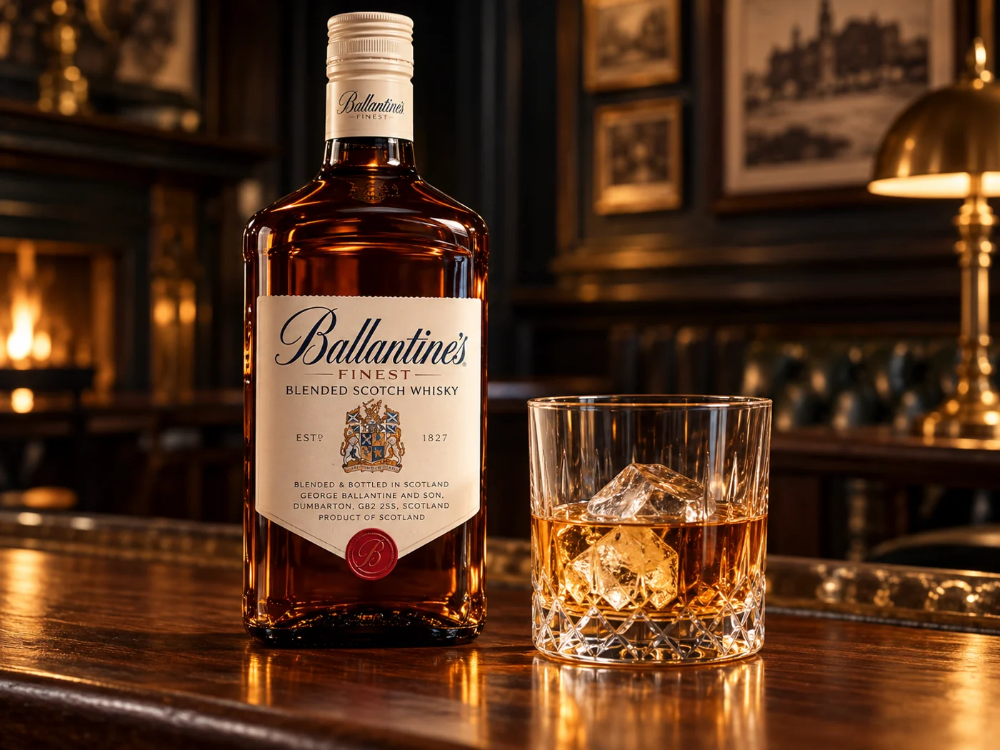
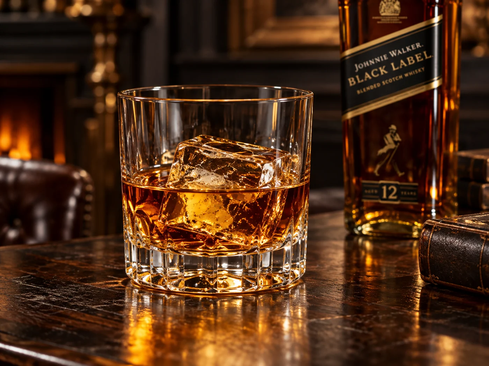
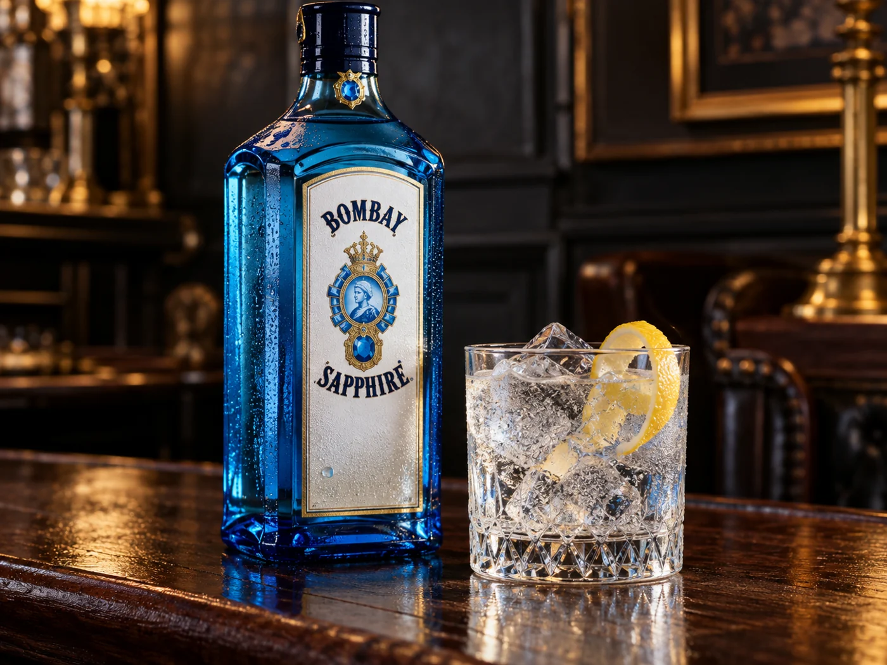
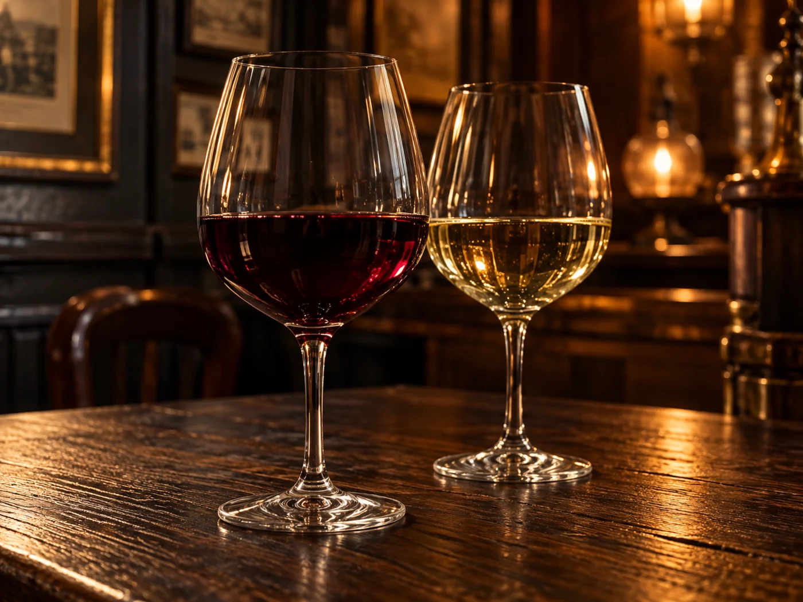

PIZZERIA & BAR · 1986
Egyszerűen.
Jól felszolgálva.
A friss csapolt sörtől a jeges aperitifig, a reggeli első kávétól az utolsó koccintásig. Üdvözöljük bárunkban.

ÍZELÍTŐ BÁRUNK KÍNÁLATÁBÓL
Martini Bianco, Baileys, Ballantine’s, Johnnie Walker és Bombay Sapphire. A felszolgálásról, elérhetőségről és az árakról kérdezze munkatársainkat.








Itallap
Rendelés előtt az allergénekről és az elérhetőségről kérdezze munkatársainkat.
TALÁLKOZZUNK PALICSON
Az asztala
már várja.
Asztalfoglalásért, rendelésért és információért hívjon bennünket. A foglalás csak a munkatársunkkal történt egyeztetés után végleges.